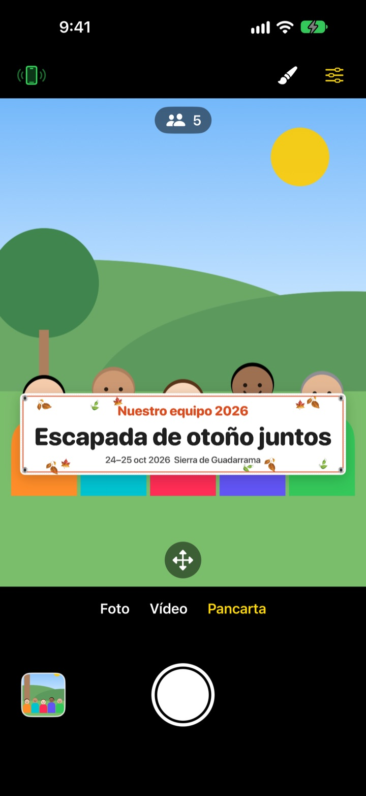
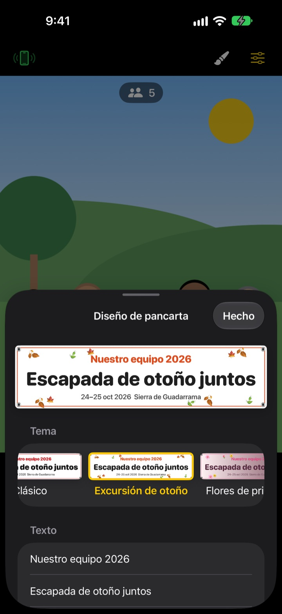

La foto de grupo con pancarta.
Sin imprimir nada.
Escribe el texto, elige un tema y la pancarta aparece justo delante del grupo. El iPhone de un amigo se convierte en mando con un solo escaneo QR, así que quien hace la foto también sale en ella.
Todas las funciones son gratis. Requiere iOS 17 o posterior.

Crea una pancarta
Cambia el texto y toca un tema. Pulsa el disparador y, como en la app, cuenta tres segundos antes de hacer la foto.
¿Encargar una pancarta para una sola foto?
La encargas, la cargas hasta la excursión y luego nadie sabe dónde guardarla. Y como no queda nadie para hacer la foto, siempre hay alguien que se queda fuera. ShutterLink pone la pancarta en la imagen de la cámara y convierte el iPhone de un amigo en mando, para que todos salgáis en la foto con la pancarta.
Una pancarta para tu evento en un minuto
Elige entre 13 temas, como excursión de otoño, flores de primavera, fiesta de fin de año, cumpleaños, día del deporte, graduación, boda o taller de empresa, y escribe hasta tres líneas de texto propio.
Cambia el fondo, la tipografía, los adornos, los colores y la proporción, y añade tu logo. Elige tela, vinilo o papel: la pancarta de tela se comba, se arruga y ondea con la brisa como una de verdad.

Un mando sin instalar nada, con un QR
Toca el botón del mando arriba a la izquierda y aparece un código QR. Tu amigo lo enfoca con la app Cámara y ShutterLink Remote se abre al momento como App Clip y se conecta.
En la vista en directo del mando se ve hasta la pancarta, así que encuadras y pulsas el disparador. Cada foto llega enseguida al iPhone que hace de mando, y un amigo sin la app puede guardarla y compartirla en el acto.
Empieza en tres pasos
- 1
Coloca el iPhone
Abre ShutterLink y ponlo en un trípode o una estantería.
- 2
Pon la pancarta
Elige Pancarta abajo, toca el pincel para fijar el texto y el tema y toca el suelo donde se colocará el grupo.
- 3
Levanta la palma
Levanta la palma o pulsa el disparador del mando. El temporizador cuenta y hace la foto.
Pensado para fotos de grupo
- Gesto de palma · disparo por palmada
- Levanta la palma abierta hacia la cámara o da una palmada fuerte para iniciar el temporizador
- Disparo por sonrisa
- Dispara solo cuando todos sonríen con los ojos abiertos
- Temporizador de 3 · 5 · 10 · 20 · 30 s
- Una voz cuenta atrás, el flash parpadea a la vez y el mando vibra en tu mano
- Pedir a todos que miren a la cámara
- Al pulsarlo, el iPhone que hace la foto llama la atención del grupo en voz alta
- Ráfaga de 3 · 5 fotos
- Elige la mejor foto en la que todos tienen los ojos abiertos. Puedes cambiarla por otra en la galería
- Personas · bordes · nivel
- Cuenta cuántas personas hay en el encuadre, avisa si alguien queda en el borde y muestra un nivel si el móvil se inclina
- Intervalos de 3 s a 1 min
- Captura una puesta de sol o el avance de un proyecto a intervalos regulares
- Control de la cámara
- Enfoque y exposición con un toque, compensación de exposición, flash, cuadrícula, zoom de 0,5x hasta 10x según el modelo, cámara frontal y trasera, vídeo
- Modo sencillo
- El mando muestra un único botón de disparo grande que cualquiera puede pulsar
- Botones de volumen · Control de Cámara
- Dispara desde el propio iPhone, sin mando
En el modo Pancarta no están disponibles el flash, las ráfagas, el zoom ni la cámara frontal. El temporizador, el disparo con la palma y el mando funcionan igual.
Todas las funciones son gratis
Gratis
- Modo Pancarta con 13 temas
- Mando sin instalar nada (App Clip)
- Disparo por palma, palmada y sonrisa, y temporizador
- Mejor foto, recuento de personas y nivel
- Vídeo y fotos a intervalos
Deja una propina (opcional)
- Envía una propina pequeña, mediana o grande desde Ajustes
- Las propinas no desbloquean ni bloquean nada
No es una suscripción. Pagas una vez, solo cuando das propina.
Sin anuncios y sin cuenta.
Preguntas frecuentes
¿Qué necesito?
Instala ShutterLink en el iPhone que hará las fotos (iOS 17 o posterior). El iPhone que hace de mando no necesita instalar nada, solo conexión a internet la primera vez que abre el App Clip. Mantén el Bluetooth activado en los dos y los móviles cerca, normalmente a menos de 10 m.
Escaneo el QR y el App Clip no se abre.
Comprueba que el iPhone que hace de mando tiene conexión a internet. También puedes escribir en ShutterLink Remote el código de 4 cifras del iPhone que hace la foto y tocar Conectar. Revisa además que los App Clips no estén bloqueados en Ajustes › Tiempo de uso › Restricciones de contenido y privacidad.
Se queda en «Buscando la cámara…».
ShutterLink tiene que estar abierto en la pantalla del iPhone que hace la foto. Comprueba que el Bluetooth está activado en Ajustes › Bluetooth en los dos móviles. El código cambia cada vez que abres la app, así que si la has vuelto a abrir, usa el QR o el código nuevos y toca Reintentar.
Aparece «Permiso de Bluetooth denegado».
Activa ShutterLink en Ajustes › Privacidad y seguridad › Bluetooth. El mando es un App Clip y puede no aparecer en la lista; en ese caso, vuelve a escanear el QR y toca Permitir cuando te lo pida.
La vista en directo va a saltos o se ve borrosa.
La vista en directo se reduce a propósito para viajar por Bluetooth. Las fotos y los vídeos se guardan con la calidad completa del iPhone que hace la foto. Paredes, personas o mucha distancia pueden provocar cortes, pero el disparador y los demás controles siguen funcionando.
¿Dónde están mis fotos?
En Fotos del iPhone que hace la foto y en la galería de la app. El mando también recibe una copia, pero no la guarda solo, así que guárdala o compártela antes de cerrar el mando. Si no llega nada a Fotos, permite ShutterLink en Ajustes › Privacidad y seguridad › Fotos.
Mis vídeos no tienen sonido.
Activa ShutterLink en Ajustes › Privacidad y seguridad › Micrófono.
¿Puedo conectar varios mandos?
Sí. Varios iPhone pueden conectarse a la vez con el mismo QR o código, y cualquiera de ellos dispara la misma cámara.
Se corta la conexión mientras hago fotos.
ShutterLink mantiene la pantalla encendida mientras está abierto. Si bloqueas el móvil con el botón lateral o cambias de app, la conexión se corta, así que deja la app en pantalla mientras haces fotos.
¿Se suben mis fotos a algún sitio?
No. Los dos iPhone se conectan directamente por Bluetooth y las fotos y vídeos se quedan solo en el iPhone que hace la foto y en el mando conectado. Funciona en la montaña o en la playa sin cobertura, y no necesitas cuenta.
¿Sigue sin funcionar o has encontrado un fallo? Escribe a leeo@kakao.com. Indica el modelo y la versión de iOS de los dos iPhone para revisarlo antes.